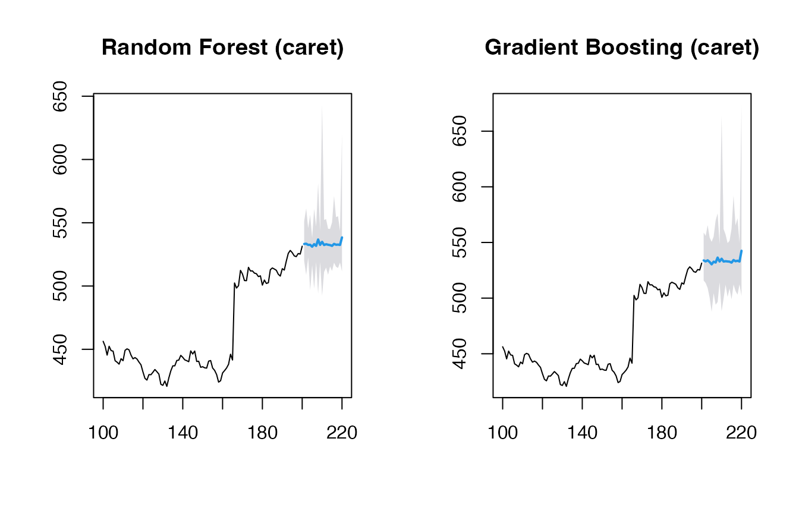
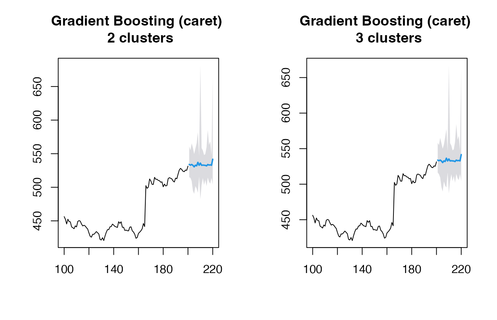
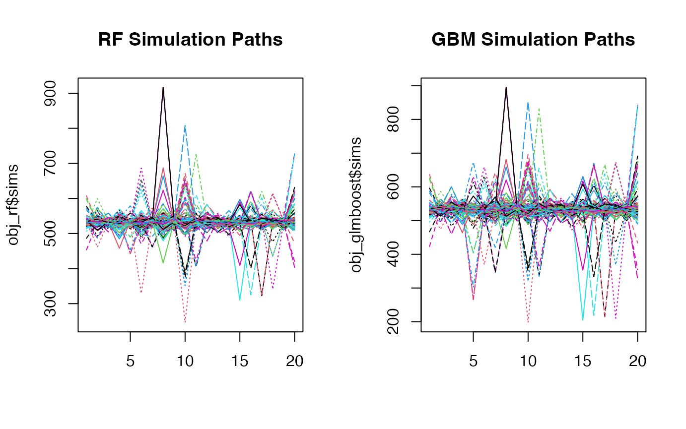

Beyond GARCH
mlarch.RmdIntroduction
Probabilistic stock forecasting often relies on parametric models
like ARIMA for the mean and GARCH for volatility. The
mlarchf function in the ahead package offers a
flexible hybrid alternative to ARMA-GARCH by combining machine learning
approaches with ARCH effects.
The model decomposes the time series into two components:
- Mean component:
- Volatility component:
where:
- is the conditional mean (modeled using any forecasting method)
- is the conditional volatility (modeled using machine learning)
- are standardized residuals
The key innovation is using machine learning methods
and conformal prediction to model the volatility component, allowing for
more flexible and potentially more accurate volatility forecasts than
traditional GARCH models. The function supports various machine learning
methods through parameters fit_func and
predict_func as in other ahead models, and
through the caret package.
The forecasting process involves:
- Fitting a mean model (default:
auto.arima) - Modeling the squared residuals using machine learning. For this to work, the residuals from the mean model need to be centered, so that
(basically a supervised regression of squared residuals on their lags) is a good approximation of the latent conditional volatility
- Conformalizing the standardized residuals for prediction intervals
This new approach combines the interpretability of traditional time series models with the flexibility of machine learning, while maintaining proper uncertainty quantification through conformal prediction.
Basic Usage
Let’s start with a simple example using the Google stock price data
from the fpp2 package:
y <- fpp2::goog200
# Default model for volatility (Ridge regression for volatility)
(obj_ridge <- ahead::mlarchf(y, h=20L, B=500L))## Point Forecast Lo 95 Hi 95
## 201 533.4806 512.7812 549.9381
## 202 534.7064 515.7697 552.1797
## 203 538.8649 484.1721 616.3803
## 204 536.1930 523.4435 551.1034
## 205 536.8055 520.5741 556.1976
## 206 537.5393 520.6689 553.1701
## 207 537.6365 524.3945 548.4499
## 208 537.4759 511.4850 552.1990
## 209 539.1986 522.4345 551.1335
## 210 539.4604 519.2788 557.4779
## 211 540.2246 514.9235 557.3380
## 212 542.1635 527.1610 558.9331
## 213 542.3887 518.5475 567.8483
## 214 543.2326 524.3450 559.1676
## 215 543.8326 519.7481 563.2478
## 216 544.5939 522.5941 563.2784
## 217 544.6853 533.4650 554.1662
## 218 547.5403 518.1748 587.8554
## 219 546.7615 517.4711 571.0961
## 220 547.3477 528.1812 567.5666Different Machine Learning Methods
The package supports various machine learning methods for volatility modeling. Here are some examples:
# Random Forest
(obj_rf <- ahead::mlarchf(y, fit_func = randomForest::randomForest,
predict_func = predict, h=20L, B=500L))## Point Forecast Lo 95 Hi 95
## 201 533.5974 506.6619 553.1147
## 202 534.6785 515.8041 552.0315
## 203 537.2452 482.5579 593.0451
## 204 536.4988 517.6053 554.1766
## 205 536.6334 519.1573 554.4088
## 206 537.6834 512.1617 558.3085
## 207 537.4435 523.6514 548.2841
## 208 537.3752 516.1036 551.4575
## 209 539.0300 522.3961 550.5044
## 210 540.0228 517.7176 560.6629
## 211 540.2243 514.7579 559.2400
## 212 542.0033 526.2534 557.4374
## 213 542.0959 519.7812 563.4860
## 214 543.3169 513.8378 564.8901
## 215 543.6695 517.0228 563.6238
## 216 544.4767 518.7328 565.8091
## 217 544.4831 533.1945 552.9737
## 218 546.8439 512.8608 582.2913
## 219 546.3695 518.1833 571.2569
## 220 547.1763 523.9160 569.1065
# Support Vector Machine
(obj_svm <- ahead::mlarchf(y, fit_func = e1071::svm,
predict_func = predict, h=20L, B=500L))## Point Forecast Lo 95 Hi 95
## 201 533.1427 517.5976 544.8916
## 202 533.8095 524.1212 542.8469
## 203 538.7901 484.8699 614.9152
## 204 536.1187 521.9632 549.8706
## 205 536.6393 521.8249 554.3327
## 206 537.2457 523.2074 549.7902
## 207 537.3195 527.3237 545.2939
## 208 537.5654 502.4134 557.8313
## 209 538.8488 526.1186 547.8959
## 210 539.1481 527.0352 550.5461
## 211 540.2415 516.6452 557.4198
## 212 541.8366 529.0162 556.3658
## 213 541.9397 523.6174 561.6057
## 214 542.5366 528.6820 553.3226
## 215 543.4923 524.6307 560.2814
## 216 544.9304 520.9040 565.7536
## 217 544.3461 535.5803 551.7333
## 218 546.3091 527.6293 571.6090
## 219 546.7976 514.3590 571.5249
## 220 547.1252 530.1104 565.0622
# Elastic Net
(obj_glmnet <- ahead::mlarchf(y, fit_func = glmnet::cv.glmnet,
predict_func = predict, h=20L, B=500L))## Point Forecast Lo 95 Hi 95
## 201 533.6281 510.1724 552.3275
## 202 534.7528 515.3434 552.6608
## 203 539.3557 479.5991 624.0469
## 204 535.9264 525.0645 548.5812
## 205 536.9439 519.5028 557.7788
## 206 537.5855 520.0552 553.8907
## 207 537.6281 524.4364 548.4012
## 208 537.4630 513.2144 550.7782
## 209 539.1592 522.8510 550.7695
## 210 539.4471 517.7210 558.0418
## 211 540.2176 515.2196 558.1355
## 212 542.1514 527.2173 558.9424
## 213 542.3953 518.4870 567.9236
## 214 543.2629 523.8866 559.6314
## 215 543.7642 519.8804 563.0537
## 216 544.5776 522.6098 563.2623
## 217 544.6875 533.5338 554.1466
## 218 547.6013 518.3250 588.5067
## 219 546.8071 517.5266 571.1790
## 220 547.3435 528.1980 567.5450Let’s visualize the forecasts:
Using caret Models
The package also supports models from the caret package,
which provides access to hundreds of machine learning methods. Here’s
how to use them:
y <- window(fpp2::goog200, start=100)
# Random Forest via caret
(obj_rf <- ahead::mlarchf(y, ml_method="ranger", h=20L))## Point Forecast Lo 95 Hi 95
## 201 533.2217 519.7545 551.2789
## 202 533.4289 508.7793 561.2563
## 203 532.5081 522.7171 545.6843
## 204 532.5845 496.7187 556.3001
## 205 531.0700 516.5534 537.9635
## 206 533.1075 498.0570 560.9777
## 207 531.7228 518.8245 546.9463
## 208 536.7600 494.0295 581.1543
## 209 532.5098 518.9785 543.2731
## 210 534.9138 492.3333 643.1936
## 211 532.4037 511.1663 552.2278
## 212 533.0276 514.6206 552.8846
## 213 532.6238 508.8882 545.2699
## 214 532.3550 515.4750 545.1223
## 215 531.7375 511.9204 550.2971
## 216 533.2960 518.4579 571.1042
## 217 532.6241 515.2257 554.4349
## 218 532.7400 514.2495 555.1522
## 219 532.4761 518.5678 543.5364
## 220 538.4040 511.5477 620.3324
# Gradient Boosting via caret
(obj_glmboost <- ahead::mlarchf(y, ml_method="glmboost", h=20L))## Point Forecast Lo 95 Hi 95
## 201 533.8701 515.8658 558.9045
## 202 533.0054 513.5232 555.9021
## 203 533.9543 509.1005 565.5555
## 204 532.4663 500.3592 554.3759
## 205 530.3546 487.8458 550.5752
## 206 532.7514 504.4626 555.2216
## 207 531.9793 494.0201 569.7413
## 208 536.4208 496.4988 576.1754
## 209 532.8969 514.2236 548.1513
## 210 535.4018 488.2069 663.9307
## 211 532.8645 499.7450 562.0512
## 212 533.1700 512.0860 557.0973
## 213 532.9489 501.1571 549.4412
## 214 532.7705 508.6909 551.5723
## 215 531.8926 498.9307 562.3804
## 216 534.2298 512.2569 592.0716
## 217 533.1365 506.4043 565.2682
## 218 533.5952 503.1513 571.7999
## 219 532.8960 512.4455 549.3375
## 220 542.5460 501.9816 673.6868
# Gradient Boosting via caret and using clustering explicitly
(obj_glmboost2 <- ahead::mlarchf(y, ml_method="glmboost", n_clusters=2, h=20L))## Point Forecast Lo 95 Hi 95
## 201 534.0146 514.9224 560.5618
## 202 532.9590 514.0693 555.1592
## 203 533.9364 509.2619 565.3097
## 204 532.6460 494.6990 558.5408
## 205 530.4175 490.2885 549.5061
## 206 532.8813 501.7047 557.6455
## 207 531.9241 498.1468 565.5260
## 208 537.0770 491.8545 582.1099
## 209 532.7665 515.8096 546.6188
## 210 535.9265 482.4202 681.6436
## 211 532.7053 503.3907 558.5389
## 212 533.0187 513.8204 554.8061
## 213 532.8327 503.5531 548.0218
## 214 532.6322 511.1304 549.4211
## 215 531.8562 501.7896 559.6660
## 216 533.9142 514.4619 585.1207
## 217 533.0229 508.1219 562.9535
## 218 533.4174 505.5315 568.4120
## 219 532.7772 514.0412 547.8401
## 220 541.7402 504.1291 663.3333
(obj_glmboost3 <- ahead::mlarchf(y, ml_method="glmboost", n_clusters=3, h=20L))## Point Forecast Lo 95 Hi 95
## 201 533.7966 516.3455 558.0618
## 202 532.9538 514.1296 555.0772
## 203 533.9236 509.3778 565.1332
## 204 532.6090 495.8651 557.6827
## 205 530.4004 489.6227 549.7975
## 206 532.7748 503.9648 555.6592
## 207 531.9274 497.8967 565.7814
## 208 536.5675 495.4602 577.5025
## 209 532.7167 516.4157 546.0331
## 210 535.5019 487.1022 667.3121
## 211 532.6695 504.2100 557.7495
## 212 532.9886 514.1650 554.3508
## 213 532.7910 504.4123 547.5128
## 214 532.6075 511.5657 549.0373
## 215 531.8530 502.0446 559.4239
## 216 533.8911 514.6231 584.6123
## 217 532.9945 508.5520 562.3739
## 218 533.3932 505.8553 567.9509
## 219 532.7551 514.3379 547.5617
## 220 541.6314 504.4189 661.9364Visualizing the forecasts:
par(mfrow=c(1, 2))
plot(obj_rf, main="Random Forest (caret)")
plot(obj_glmboost, main="Gradient Boosting (caret)")
par(mfrow=c(1, 2))
plot(obj_glmboost2, main="Gradient Boosting (caret) \n 2 clusters")
plot(obj_glmboost3, main="Gradient Boosting (caret) \n 3 clusters")
Looking at the simulation paths:
par(mfrow=c(1, 2))
matplot(obj_rf$sims, type='l', main="RF Simulation Paths")
matplot(obj_glmboost$sims, type='l', main="GBM Simulation Paths")
Customizing Mean and Residual Models
You can also customize both the mean forecasting model and the model for forecasting standardized residuals:
# Using RW + Theta method for mean and residuals along with SVM for volatility
(obj_svm <- ahead::mlarchf(y, fit_func = e1071::svm,
predict_func = predict, h=20L,
mean_model=forecast::rwf,
model_residuals=forecast::thetaf))## Point Forecast Lo 95 Hi 95
## 201 536.0611 523.7248 555.0916
## 202 536.9444 516.6328 572.6381
## 203 534.4137 524.1067 549.4079
## 204 538.7837 510.3902 575.1710
## 205 534.1128 522.5138 548.3994
## 206 538.3217 516.6144 569.2249
## 207 534.3154 524.5893 555.2378
## 208 543.8541 514.0522 594.5224
## 209 534.7829 527.0739 549.2626
## 210 551.0439 493.4886 702.0912
## 211 536.6495 524.2763 561.0475
## 212 539.8005 518.9739 578.7811
## 213 536.3281 521.3675 554.3227
## 214 539.2460 516.1300 568.0429
## 215 536.7317 526.0333 562.7160
## 216 544.4344 520.6134 688.3766
## 217 538.4335 525.8095 587.4754
## 218 544.1933 518.7501 602.2242
## 219 536.4960 525.6372 557.0674
## 220 565.0100 517.4631 821.9754
# Using Theta + Theta method for mean and residuals along with GLMNET for volatility
(obj_glmnet <- ahead::mlarchf(y, fit_func = glmnet::cv.glmnet,
predict_func = predict, h=20L,
mean_model=forecast::thetaf,
model_residuals=forecast::thetaf))## Point Forecast Lo 95 Hi 95
## 201 540.3554 520.9814 574.1266
## 202 536.4905 522.7721 564.8219
## 203 537.6888 524.7349 565.5210
## 204 537.5091 519.3313 562.2976
## 205 537.7507 515.3271 556.5779
## 206 541.5249 524.6552 588.6952
## 207 542.4904 513.8270 583.3074
## 208 544.9229 522.6309 593.8807
## 209 540.8525 528.6994 565.1327
## 210 551.3820 508.0279 682.4038
## 211 545.3218 515.5507 592.9858
## 212 542.6381 530.1911 573.8377
## 213 543.5937 527.2041 569.1911
## 214 543.8428 525.2684 570.5311
## 215 545.4903 530.0497 589.2793
## 216 548.6111 533.3226 671.6388
## 217 549.3322 532.1086 614.2345
## 218 550.6709 532.1793 591.8900
## 219 546.7978 534.8269 570.2250
## 220 566.3431 529.0212 756.5023
plot(obj_svm, main="SVM with RW + Theta")
plot(obj_glmnet, main="Elastic Net with Theta + Theta")
When using non-ARIMA models for the mean forecast, it’s important to check if the residuals of the mean forecasting model are centered and stationary:
# Diagnostic tests for residuals
print(obj_svm$resids_t_test)##
## One Sample t-test
##
## data: resids
## t = 1.0148, df = 99, p-value = 0.3127
## alternative hypothesis: true mean is not equal to 0
## 95 percent confidence interval:
## -0.7180739 2.2214961
## sample estimates:
## mean of x
## 0.7517111
print(obj_svm$resids_kpss_test)##
## KPSS Test for Level Stationarity
##
## data: resids
## KPSS Level = 0.25272, Truncation lag parameter = 4, p-value = 0.1
print(obj_glmnet$resids_t_test)##
## One Sample t-test
##
## data: resids
## t = 1.0992, df = 100, p-value = 0.2743
## alternative hypothesis: true mean is not equal to 0
## 95 percent confidence interval:
## -0.6460748 2.2513707
## sample estimates:
## mean of x
## 0.8026479
print(obj_glmnet$resids_kpss_test)##
## KPSS Test for Level Stationarity
##
## data: resids
## KPSS Level = 0.26089, Truncation lag parameter = 4, p-value = 0.1